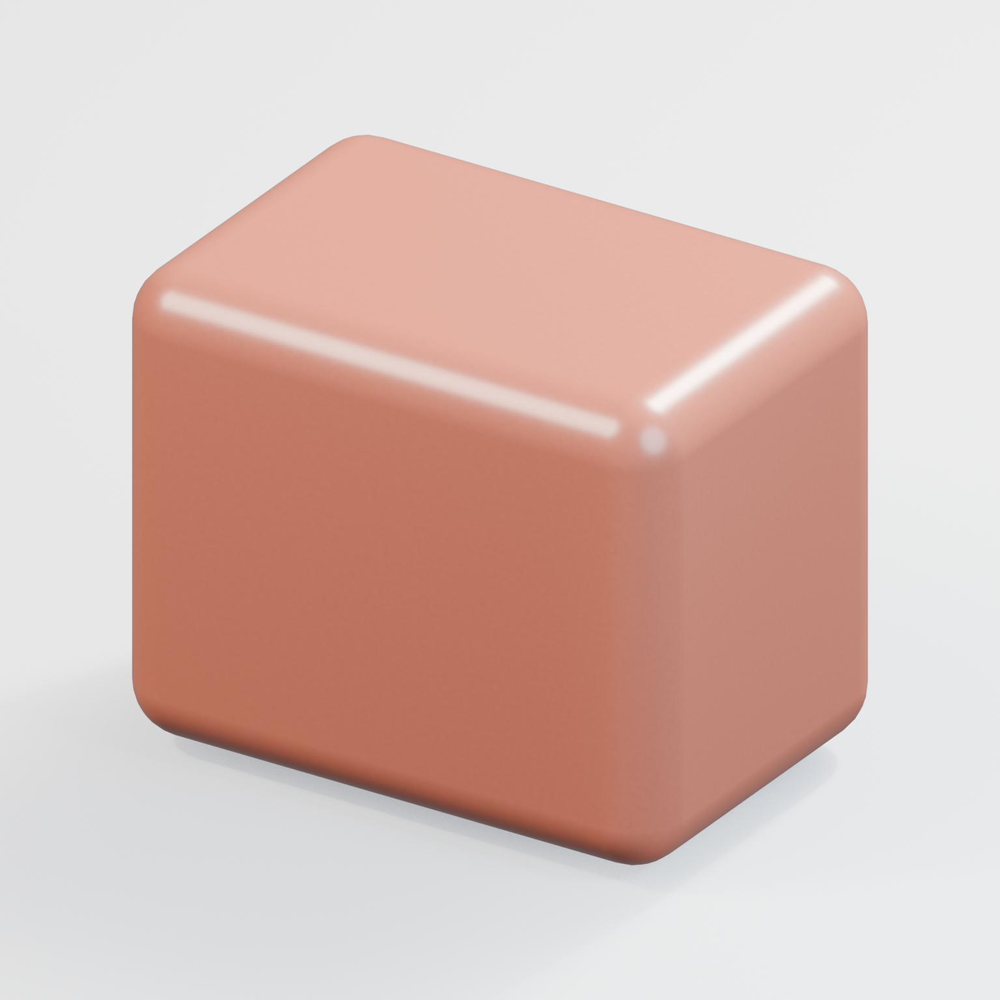
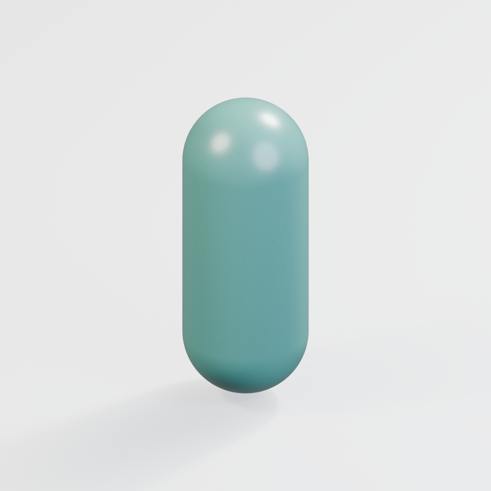
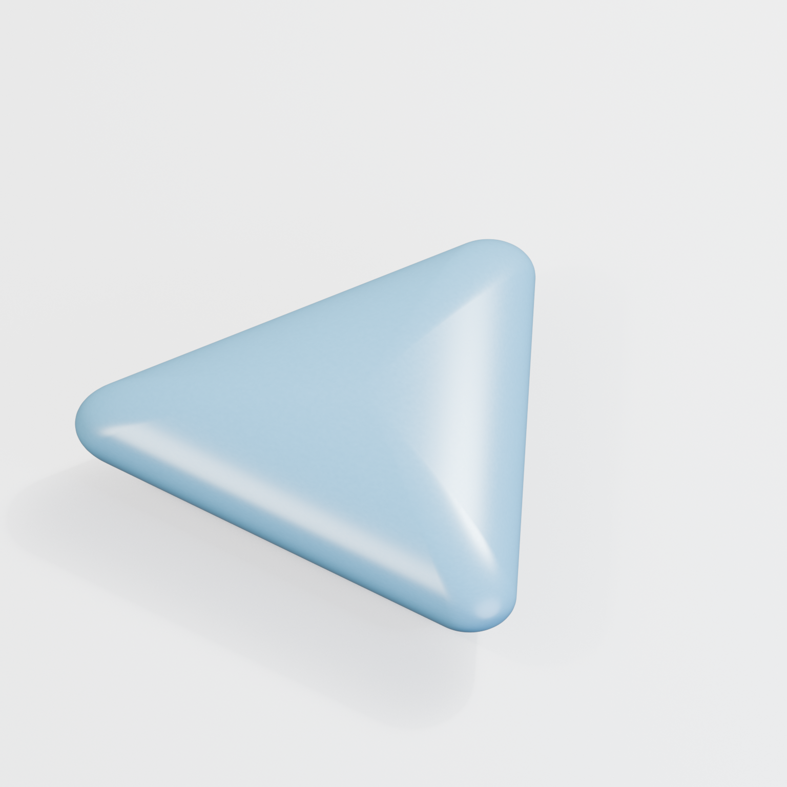
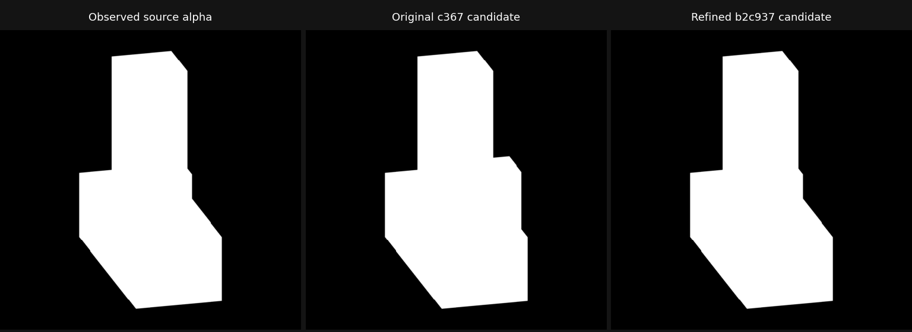

SHAPE / SURFACE / LIGHT
Geometry you
can inspect.
From silhouettes to editable solids. Explore the shapes, turn through the cameras, and look a little closer.
Inspect a reconstructionColor. Detail. Soft light.
Studio materials · 1536-pixel renders

Rounded box
Soft bevels. Live radius control.
Capsule
Smooth ends. Editable segment.
Triangular dot
Rounded corners. Asymmetric profile.Presentation renders from the retained experiments. Open any image at full resolution.
01 / THE COLLECTION
Twelve ways to take shape.
02 / LOOK CLOSER
Measurements
Five-view comparison
| Camera | Area IoU | Boundary IoU | Distance loss | Verdict |
|---|
Area ≥ 0.700 · Boundary ≥ 0.800 · Distance loss ≤ 0.050
Source records & earlier results
Reconstruction notes
03 / THE DETAIL EXPERIMENT
One crop. A measurable win.
A higher-resolution detail crop improves the rounded box while two reserved oblique cameras check the result independently.
| Observation | Baseline | Detail crop |
|---|---|---|
| 35° boundary IoU | 0.968154 | 0.975912 |
| 145° boundary IoU | 0.970762 | 0.978686 |
| Held-out alpha error | 0.000642503 | 0.000434165 |
| Mean surface distance | 0.000253135 | 0.000189280 |
All five silhouette views, native boundary and radius edit/restore passed. Artist surface limits remain unqualified.
The 2048-pixel follow-up
A second crop reduced held-out alpha error a further 11.2%. Acquisition and fitting took 1.813 seconds; the complete checkpoint took 7.779 seconds and 684 MB peak RSS. The selected rounded box above uses this later checkpoint.
The first three-segment prototype failed both boundary gates. Its record remains in the source files; the corrected model keeps eight bevel segments.
04 / A DIFFERENT ANGLE
See what silhouettes miss.
One extra camera revealed excess depth in the multipart solid. A single depth adjustment brought the reconstruction back to the source.

| Observation | Before | After |
|---|---|---|
| New-view boundary IoU | 0.787341 · failed | 0.994247 · passed |
| Reserved oblique boundary | 0.853192 | 0.991509 |
| Mean surface distance | 0.004201645 | 0.000161978 |
| Sampled maximum distance | 0.180239215 | 0.000502135 |
Original views, the new view, exact boundary and depth edit/restore pass. Distances use world units; artist surface limits remain unqualified.